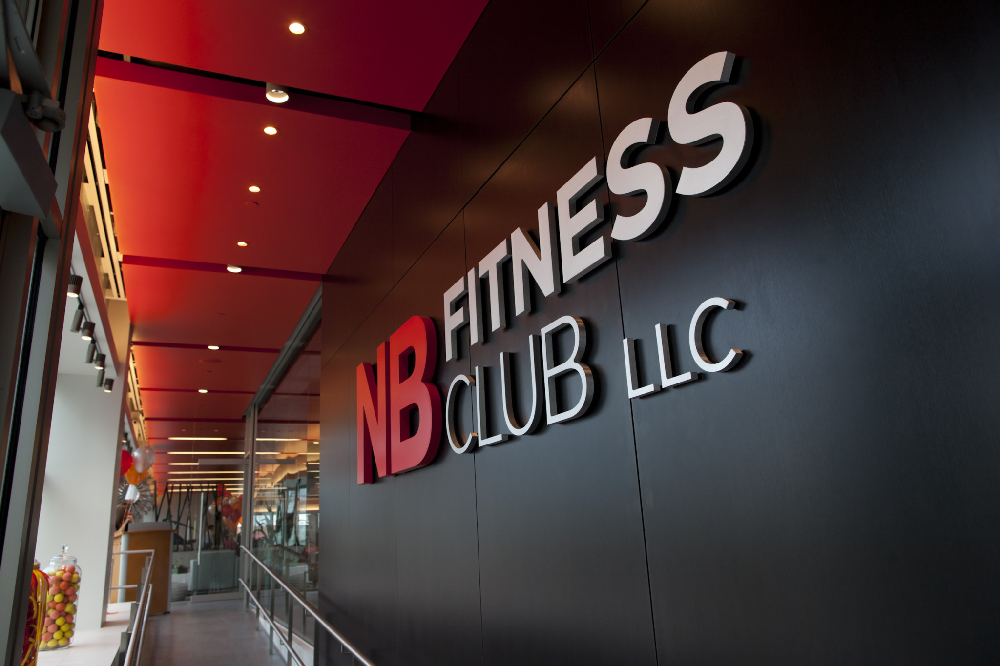
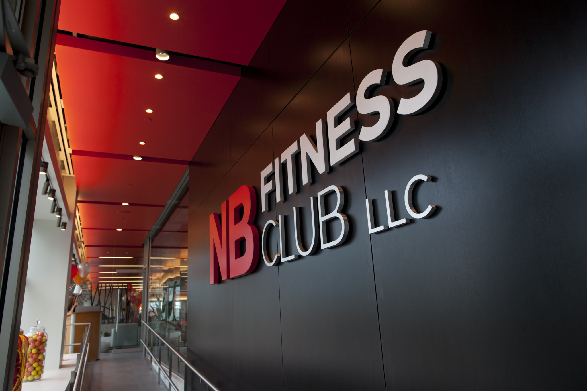
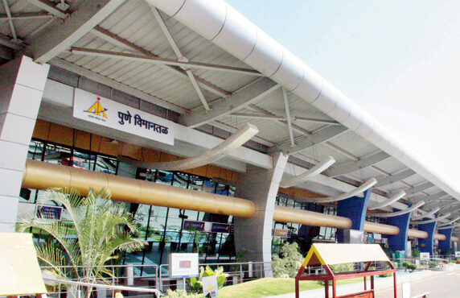
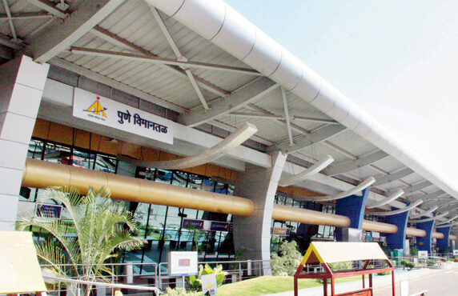

Earlier, Hinjawadi was a village until the construction of the Rajiv Gandhi Infotech Park. Today, it is one
of the epicenters of IT industry in India. To enhance the overall planning and development of Hinjawadi
area, it was brought under the jurisdiction of PMRDA. Initially, the State Government was reluctant on the
demands to bring the Hinjawadi under the jurisdiction of either PMC or PCMC as this area needed special
attention. Currently, the Rajiv Gandhi Infotech Park is divided into three major phases with further phases
planned. Eventually, the Hinjawadi Industries Association (HIA) was formed to provide a joint forum to all
stakeholders based out of Hinjawadi and nearby places.
Hinjawadi is a proposed hub for integrated townships in Pimpri-Chinchwad. The new Special Township Policy
Act of the Maharashtra government has laid down an integrated approach to the development of townships to
de-congest Pune Municipal Corporation areas and encourage new settlements in its periphery though higher FSI
(floor space index) than what is normally allowed in the municipal limits.
Earlier, Hinjawadi was a village until the construction of the Rajiv Gandhi Infotech Park. Today, it is one
of the epicenters of IT industry in India. To enhance the overall planning and development of Hinjawadi
area, it was brought under the jurisdiction of PMRDA. Initially, the State Government was reluctant on the
demands to bring the Hinjawadi under the jurisdiction of either PMC or PCMC as this area needed special
attention. Currently, the Rajiv Gandhi Infotech Park is divided into three major phases with further phases
planned. Eventually, the Hinjawadi Industries Association (HIA) was formed to provide a joint forum to all
stakeholders based out of Hinjawadi and nearby places.
13
Buildings
Building A is a 5floored space.
Every floor is 9,260 sqft.
27
Floors
Building B is a 7-floored space.
Every floor is 11,300 sqft.
111
ecre
Building C is a 9-floored space.
Every floor is 14,300 sqft.
Pune IT Park caters to all the infrastructure requirements under one
roof. Additionally, it accelerates client development with uninterrupted high speed internet, spacious work
environment, and rental work spaces that offer privacy without compromising on the objectives of a
co-working space. A highly dependable and vigilant team is always present to help clients during their times
of need as well.
Pune IT Park caters to all the infrastructure requirements under one roof. Additionally, it accelerates
client development with uninterrupted high speed internet, spacious work environment.


 

 
